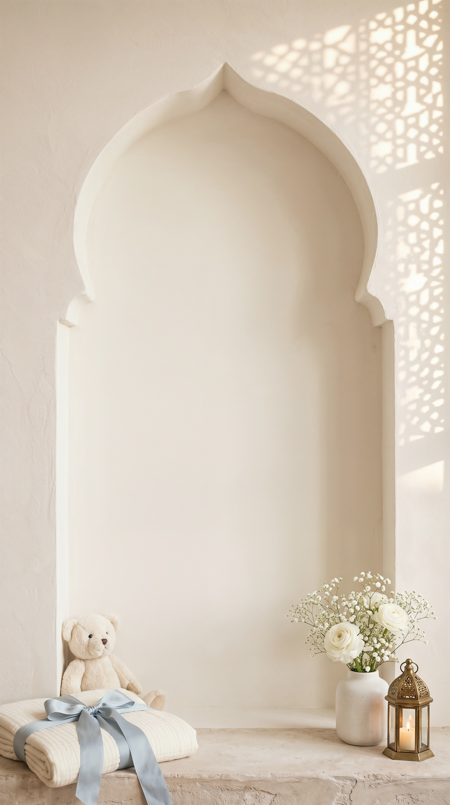

الحمد لله
الذي بنعمته تتم الصالحات
رزقنا الله بمولودنا
فهد
بن عبدالعزيز
اللهم أنبته نباتاً حسناً
واجعله قرّة عينٍ لنا، واجعله من الصالحين
واحفظه بعينك التي لا تنام
مبارك
نهنّئ أخانا الغالي
بقدوم مولوده السعيد
فهد
بن عبدالعزيز
بُورك لك في الموهوب، وشكرتَ الواهب
وبلغ أشُدَّه، ورُزقتَ بِرَّه
مع أطيب التهاني والتبريكات